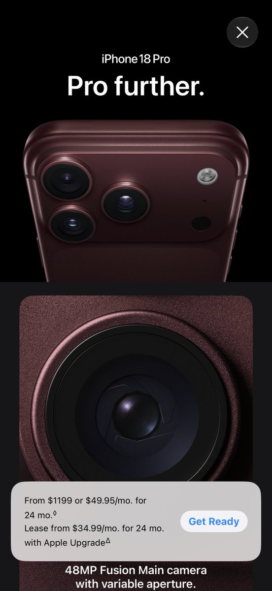

サイバー環状線
@CyberKanjousen
@SnozakiSakura 環状線比较喜欢 17 Pro 的颜色，18 这个说不上讨厌但也说不上喜欢，不过看起来还挺特别的）

草莓泡芙🍀
@SnozakiSakura
感觉 iPhone Pro 系列每年的配色都好丑，
像男士内裤配色😭
黑的、灰的、藏青的、暗红的……就是不肯来点像数字系列那种鲜艳的颜色
也就13pro的远峰蓝算是pro最好看的配色了，
所以之后每次都只好买纯白。
真的有人特别喜欢 Pro 这种配色吗？ https://t.co/wWlAdrDHRp